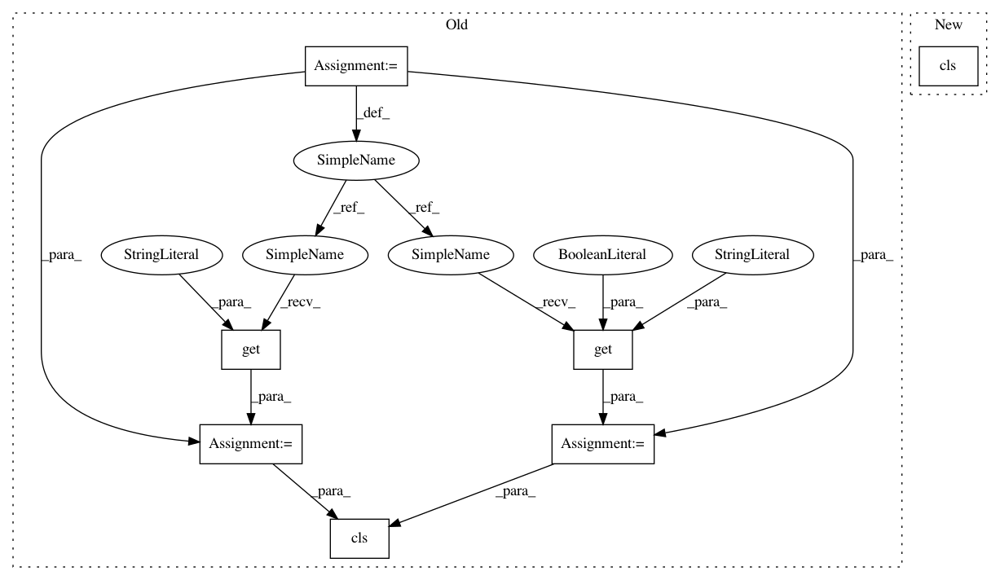

029fdb5624fafee03a59f49d86b676f25851febf,python/baseline/pytorch/seq2seq/model.py,Seq2SeqBase,create,#Any#Any#Any#,38
Before Change
hsz = kwargs["hsz"]
layers = kwargs["layers"]
rnntype = kwargs["rnntype"]
pdrop = kwargs.get("dropout", 0.5)
batchfirst = kwargs.get("batchfirst", True)
model = cls(input_embeddings, output_embeddings, hsz, layers, rnntype, batchfirst, pdrop)
print(model)
return model
// Input better be xch, x
After Change
@classmethod
def create(cls, input_embeddings, output_embeddings, **kwargs):
model = cls(input_embeddings, output_embeddings, **kwargs)
print(model)
return model
def make_input(self, batch_dict):
In pattern: SUPERPATTERN
Frequency: 3
Non-data size: 7
Instances
Project Name: dpressel/mead-baseline
Commit Name: 029fdb5624fafee03a59f49d86b676f25851febf
Time: 2017-11-22
Author: dpressel@gmail.com
File Name: python/baseline/pytorch/seq2seq/model.py
Class Name: Seq2SeqBase
Method Name: create
Project Name: dpressel/mead-baseline
Commit Name: 4c78e4d91abe9e6a37723bc2a4cff7a203f64013
Time: 2018-11-30
Author: dpressel@gmail.com
File Name: python/baseline/tf/embeddings.py
Class Name: LookupTableEmbeddings
Method Name: create
Project Name: dpressel/mead-baseline
Commit Name: 4c78e4d91abe9e6a37723bc2a4cff7a203f64013
Time: 2018-11-30
Author: dpressel@gmail.com
File Name: python/baseline/tf/embeddings.py
Class Name: PositionalLookupTableEmbeddings
Method Name: create